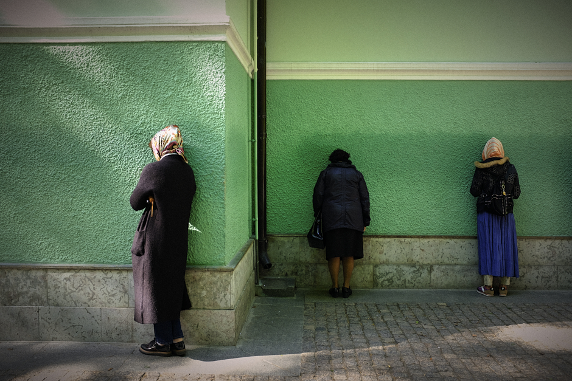
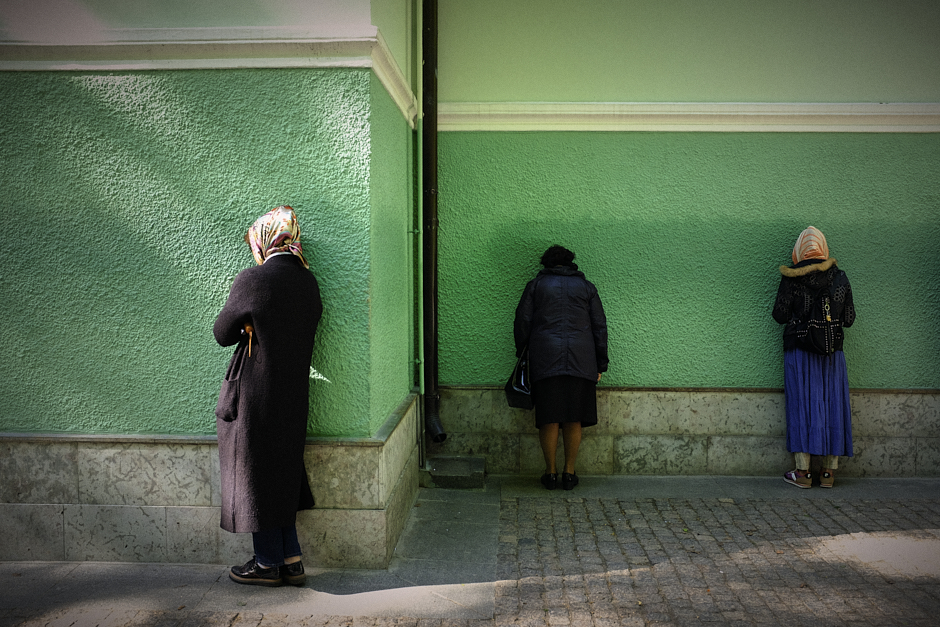
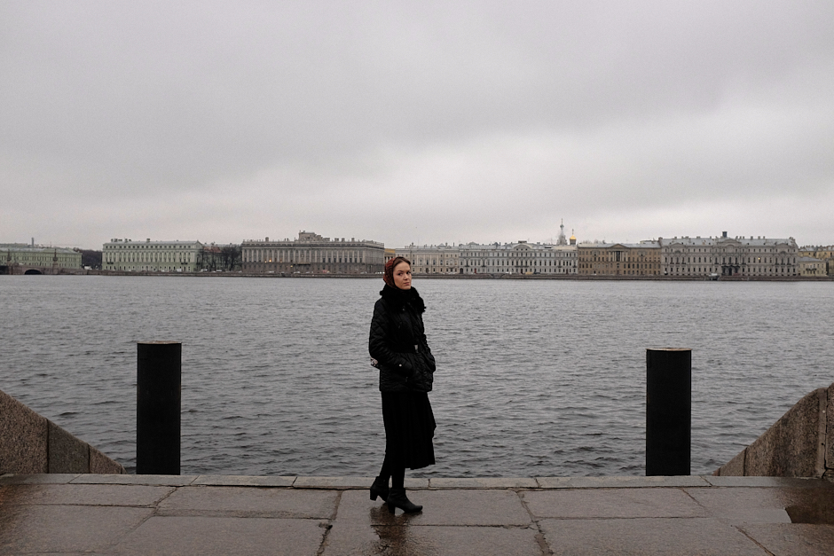
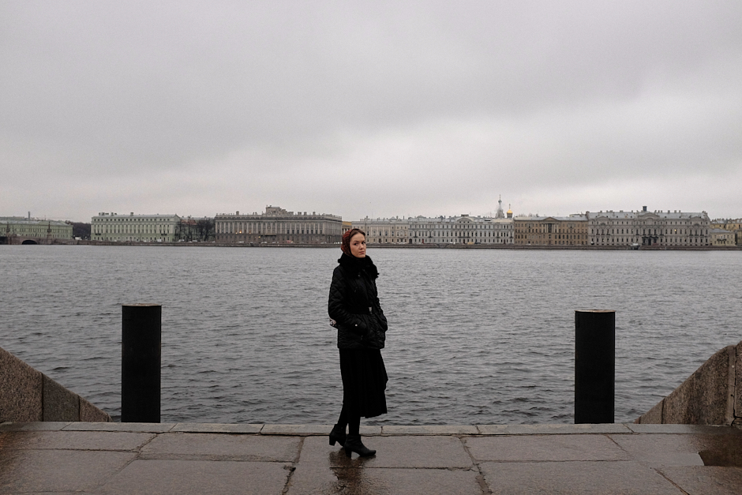

Russia, a country that stretches over a vast expanse of eastern Europe and
northern Asia. Once the preeminent republic of the Union of Soviet
Socialist Republics, today Russia is a place where I see the harmony of
religion, melancholy and dreams of a better future in people. This harmony
attracted and inspired me to start my project Dreams from a Northern
Country.
Between 2015 and 2020, I made a good number of visits to Russia to document the daily lives of Russian people in
the context of their social environment. I have extensively travelled in
St. Petersburg, Moscow and the various towns of the Bashkortostan
Republic, the first ethnic autonomy of Russia located between the Volga
River and the Ural Mountains.
Dreams from a Northern Country showcases the human landscapes of the
largest country in the world, with their dreams and wishes, their
religion, hard-to-reach goals and their neverending hope.

 



 
